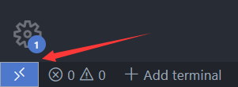

介绍
实验前阅读
- 学术诚信（什么事情能做，什么不能）
- 请务必仔细阅读配置git一节，这关乎你最终项目能否验收通过
- 如何正确向助教提问：提问的智慧和Stop-Ask-Questions-The-Stupid-Ways
- 外部资源
- CMU 15445
- 卡耐基梅隆大学的数据库课程网站
- 如果你对数据库系统感兴趣，那么强烈推荐自学这门课（然后就可以联系宫学庆老师来实验室做超酷的项目啦🤩）
- 一个简短的C++教程
- cpp reference提供了非常详细的C++标准文档
- GDB调试入门指南
- GDB Cheatsheet
- CMU 15445
关于网络
实验文档托管在github page上，无法稳定魔法上网的同学可以点击右上角下载pdf版本。但由于该文档还处于实验阶段，随时可能进行更新，阅读pdf版本可能无法及时获取最新版的实验文档，所以还是推荐同学们设法稳定魔法上网。
如何求助
- 如果你在实验过程中遇到了困难，并打算向助教寻求帮助，请先阅读提问的智慧和Stop-Ask-Questions-The-Stupid-Ways这两篇文档。
- 如果你发现了实验文档的错误、不严谨或者对实验内容有疑问或建议，建议通过右上角Github Issue向我们提出建议。
实验方案
理解数据库系统的根本途径是从零开始实现一个完整的数据库系统。但对于我们的课程项目来说从零做一个完整系统的工作量是"超模"的，于是我们基于MySQL8.0设计了DB20XX教学系统。本学期，同学们需要在该系统中完成一个B+树索引。
实验环境
- 编程语言：C++17
- 操作系统：Ubuntu 20.04(使用其他发行版或其他版本的Ubuntu不保证文档可用，需要你自行探索如何操作)
- 编译器：GCC
如何查阅资料
在学习和实验的过程中, 你会遇到大量的问题. 除了参考课本内容之外, 你需要掌握如何获取其它参考资料.
但在此之前, 你需要适应查阅英文资料。
如何适应查阅英文资料? 方法是尝试并坚持查阅英文资料.
| 搜索引擎 | 百科 | 问答网站 | |
|---|---|---|---|
| 推荐使用 | https://google.com | https://en.wikipedia.org | https://stackoverflow.com |
| 不推荐使用 |
一些说明：
- 一般来说，百度对英文关键词的处理能力比不上Google。
- 通常来说，英文维基百科比中文维基百科和百度百科包含更丰富的内容。 为了说明为什么要使用英文维基百科, 请你对比词条
Boyce-Codd范式分别在百度百科，中文维基百科和英文维基百科中的内容。 - stackoverflow是一个程序设计领域的问答网站，里面除了技术性的问题(What is ":-!!" in C code?)之外, 也有一些学术性(Is there a regular expression to detect a valid regular expression?) 和一些有趣的问题(What is the “-->” operator in C++?)。
- 自从ChatGPT诞生以后许多问题可以直接问GPT，或许能获得比搜索引擎更好的答案，同学们也不妨使用。
本章节选并改编自南京大学计算机系统基础课程实验课程文档
开发环境配置
再次强调该文档适用于Ubuntu 20.04，其余操作系统可以以此文档为依据自行探索如何操作。 本章将一步步带你配置出一个好用的开发环境。
- Ubuntu 22.04上存在libssl版本过高的问题，不建议使用，否则需要自己进行libssl版本回退，非常麻烦
安装Ubuntu20.04
什么年代了还在用传统虚拟机
Windows
Windows 10/11可以使用WSL(Windows Linux Subsystem)
如果很不幸你是家庭版用户，那么请自行安装VirtualBox，上网搜索How to install Ubuntu 20.04 on Virtualbox进行安装。
MacOS
MacOS可以使用OrbStack、UTM、Parallels或者VirtualBox
Linux
使用真机也是个不错的选择，如果你比较Geek的话（
虽然学习计算机专业不是为了修电脑装系统，但如果你连系统都没装过，也确实不太好意思跟亲戚说你是学计算机的。现在机会来了，如果你以前真的从来没有安装过操作系统，我们强烈建议你装一下真机，来了解一下安装操作系统都需要经历些什么。
安装依赖并获取源代码
检查网络是否可用
打开一个终端，输入以下指令：
ping -c 4 mirror.sjtu.edu.cn
如果网络通畅，你应该看到如下的输出：
PING mirror.sjtu.edu.cn (111.186.58.212) 56(84) bytes of data.
64 bytes from 111.186.58.212 (111.186.58.212): icmp_seq=1 ttl=50 time=3.31 ms
64 bytes from 111.186.58.212 (111.186.58.212): icmp_seq=2 ttl=50 time=2.42 ms
64 bytes from 111.186.58.212 (111.186.58.212): icmp_seq=3 ttl=50 time=2.36 ms
64 bytes from 111.186.58.212 (111.186.58.212): icmp_seq=4 ttl=50 time=1.78 ms
--- mirror.sjtu.edu.cn ping statistics ---
4 packets transmitted, 4 received, 0% packet loss, time 3004ms
rtt min/avg/max/mdev = 1.781/2.468/3.306/0.544 ms
APT换源
apt是Debian系Linux中的一个命令行工具，用于管理软件包。它可以自动从互联网上下载并安装软件包，解决软件包之间的依赖关系，并升级已安装软件包。使用apt可以避免手动下载和安装软件包的繁琐过程，使软件包的管理更加简单、快捷和高效。apt的优点是操作简单、功能强大、自动依赖解决，是Linux系统中不可或缺的软件包管理工具之一。apt默认去海外的软件源下载软件包，由于GFW的存在，这个下载速度慢得令人发指，所以需要更换apt的软件源。 请自行依照SJTU的指引完成换源。
为了方便后续操作，请务必将所有的deb-src镜像取消注释。
安装实验所需的工具和依赖
如果上一步操作你没有将所有deb-src镜像取消注释，再次强调，请务必取消。
打开终端，输入以下指令。
sudo apt build-dep -y mysql-server-8.0
sudo apt install -y git
配置git
以下内容节选并改编自Github官方文档Duplicating a repository。
- 打开这个页面，在你自己的Github账户下创建一个新仓库。并且务必将可见性设为Private，确保你的代码只有你自己能看到。
- 打开终端，输入以下指令。
git clone --bare https://github.com/FLAYhhh/DB20XX.git db20xx-public
- 然后将公共的DB20XX代码仓库mirror到你的私有仓库。假设你的Github用户名是
student，私有仓库名是DB20XX-private。在刚刚的终端里继续输入以下指令：
cd db20xx-public
# 如果你使用https进行push / pull
git push https://github.com/student/DB20XX-private.git main
# 如果你使用ssh进行push / pull
git push git@github.com:student/DB20XX-private.git main
现在公共代码已经被复制到你的私有仓库里了，可以删掉公共代码了。
cd ..
rm -rf db20xx-public
- 将你的私有仓库克隆下来
# 如果你使用https进行push / pull
git clone https://github.com/student/DB20XX-private.git main
# 如果你使用ssh进行push / pull
git clone git@github.com:student/DB20XX-private.git main
- 将公共的DB20XX代码仓库设为私有仓库的上游，以便跟随公共仓库的更新。 在终端中进入你的代码仓库。 输入以下的指令
git remote add public https://github.com/FLAYhhh/DB20XX.git
你可以通过下面的指令查看当前仓库有几个远程源
git remote -v
# 以下是输出
origin https://github.com/student/DB20XX-private.git (fetch)
origin https://github.com/student/DB20XX-private.git (push)
public https://github.com/FLAYhhh/DB20XX.git (fetch)
public https://github.com/FLAYhhh/DB20XX.git (push)
然后，配置你的用户名和邮箱，这步请务必要做，验收时会查看git log是否符合要求。用户名设为"名字拼音 姓拼音"，例如：张三，用户名配置为"San Zhang"。邮箱则配置为你的学校公邮。
git config --local user.name "San Zhang" # 用户名
git config --local user.email "xxxxxxx@stu.ecnu.edu.cn" #邮箱
- 如果公共代码仓库更新了，你可以通过下面的指令获取更新
git pull public main
编译
进入项目根目录
mkdir build && cd build
cmake .. -DWITH_BOOST=../boost -DWITH_DEBUG=ON
make -j`nproc`
IDE/Editor的配置
CLion
如果你选择使用CLion进行开发，那么无需做任何配置，使用CLion打开源代码所在文件夹即可。
VSCode
-
查看VSCode文档，自行安装
- 如果你使用VirtualBox一类的虚拟机，安装了带图形界面的Ubuntu，建议将VSCode安装在Ubuntu中
- 如果你使用WSL，在Windows里安装VSCode然后在VSCode中安装WSL插件
- 以下默认你是按照上面的方法安装的VSCode
-
打开你的源代码所在的文件夹
-
虚拟机：直接按
Ctrl+O打开文件夹 -
WSL：按右下角的Open A Remote Window，选择New WSL Window，然后打开源代码所在文件夹

-
-
安装插件:
C/C++、CMake、CMake Tools，如果你使用WSL开发，千万注意插件不是装在LOCAL里，一定要在WSL里 -
安装完成以后右下角会弹出提示框(如果没有弹出尝试重新打开文件夹)
- 选择Yes，然后弹出选项框选Unspecified
B+Tree
现在正式进入B+树实验的部分
概览
本次课程实验实现一个B+树索引。B+树是一种自平衡的多路搜索树，广泛应用于数据库和文件系统的索引结构。与其他树结构（如二叉树、前缀树等）相比，B+树具有更低的树高和更好的磁盘I/O性能，特别适用于大量数据的存储和检索。一棵B+树由内部节点和叶子节点组成，内部节点负责进行索引，叶子节点存储真实数据。你的实现需要支持线程安全的搜索、插入、删除以及一个用于遍历叶子节点的迭代器。
实验分为两个阶段：
阶段#1(30分) - 截止日期：
阶段#2(70分) - 截止日期：
你**必须**使用git记录你的开发过程并将记录推送到你的Github仓库!
阶段#1
任务#1 - B+树结点
你需要为你的B+树实现三个类型的节点。
- 节点
- 内部节点
- 叶子节点
节点(Node)
内部节点(InternalNode)
叶子节点(LeafNode)